E Heating II
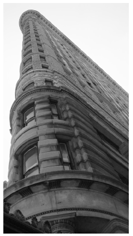
A perfectly sealed and insulated building would hold heat for ever and thus would need no heating. The two dominant reasons why buildings lose heat are:
- Conduction – heat flowing directly through walls, windows and doors;
- Ventilation – hot air trickling out through cracks, gaps, or deliberate ventilation ducts.
In the standard model for heat loss, both these heat flows are proportional to the temperature difference between the air inside and outside. For a typical British house, conduction is the bigger of the two losses, as we’ll see.
Conduction loss
The rate of conduction of heat through a wall, ceiling, floor, or window is the product of three things: the area of the wall, a measure of conductivity of the wall known in the trade as the “U-value” or thermal transmittance, and the temperature difference –
power loss = area × U × temperature difference.
| kitchen | 2 |
| bathroom | 2 |
| lounge | 1 |
| bedroom | 0.5 |
Table E.1. Air changes per hour: typical values of N for draught-proofed rooms. The worst draughty rooms might have N = 3 air changes per hour. The recommended minimum rate of air exchange is between 0.5 and 1.0 air changes per hour, providing adequate fresh air for human health, for safe combustion of fuels and to prevent damage to the building fabric from excess moisture in the air (EST 2003).
The U-value is usually measured in W/m2/K. (One kelvin (1 K) is the same as one degree Celsius (1 °C).) Bigger U-values mean bigger losses of power. The thicker a wall is, the smaller its U-value. Double-glazing is about as good as a solid brick wall. (See table E.2.)
The U-values of objects that are “in series,” such as a wall and its inner lining, can be combined in the same way that electrical conductances combine:
\[ u_{\text{series\ combination}} = \left. 1/\left( {\frac{1}{u_{1}} + \frac{1}{u_{2}}} \right) \right.\text{.} \]
There’s a worked example using this rule later.
Ventilation loss
To work out the heat required to warm up incoming cold air, we need the heat capacity of air: 1.2 kJ/m3/K.
| Element | old buildings | modern standards | best methods |
|---|---|---|---|
| Walls | 0.45-0.6 | 0.12 | |
| solid masonry wall | 2.4 | ||
| outer wall: 9 inch solid brick | 2.2 | ||
| 11 inch brick-block cavity wall, unfilled | 1.0 | ||
| 11 inch brick-block cavity wall, insulated | 0.6 | ||
| Floors | 0.45 | 0.14 | |
| suspended timber floor | 0.7 | ||
| solid concrete floor | 0.8 | ||
| Roofs | 0.25 | 0.12 | |
| flat roof with 25 mm insulation | 0.9 | ||
| pitched roof with 100 mm insulation | 0.3 | ||
| Windows | 1.5 | ||
| single-glazed | 5.0 | ||
| double-glazed | 2.9 | ||
| double-glazed, 20 mm gap | 1.7 | ||
| triple-glazed | 0.7-0.9 |
Table E.2. U-values of walls, floors, roofs, and windows.
In the building trade, it’s conventional to describe the power-losses caused by ventilation of a space as the product of the number of changes N of the air per hour, the volume V of the space in cubic metres, the heat capacity C, and the temperature difference ΔT between the inside and outside of the building
\[ \begin{matrix} \\ {= C\frac{N}{\text{1\ h}}V\text{(}\text{m}^{3}\text{)}\Delta T\text{(}\text{K}\text{)}} \\ {= \left( {1.2\text{~kJ/}\text{m}^{3}\text{/K}} \right)\frac{N}{\text{3000\ s}}V\text{(}\text{m}^{3}\text{)}\Delta T\text{(}\text{K}\text{)}} \\ {= \frac{1}{3}NV\Delta T} \\ \end{matrix} \]
Energy loss and temperature demand (degree-days)
Since energy is power × time, you can write the energy lost by conduction through an area in a short duration as
energy loss = area × U × (ΔT × duration),
and the energy lost by ventilation as
1⁄3NV × (ΔT × duration).
Both these energy losses have the form
Something × (ΔT × duration),
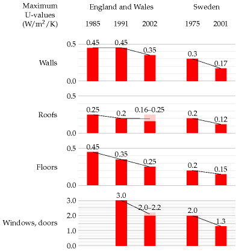
Figure E.3. U-values required by British and Swedish building regulations.
where the “Something” is measured in watts per °C. As day turns to night, and seasons pass, the temperature difference ΔT changes; we can think of a long period as being chopped into lots of small durations, during each of which the temperature difference is roughly constant. From duration to duration, the temperature difference changes, but the Somethings don’t change. When predicting a space’s total energy loss due to conduction and ventilation over a long period we thus need to multiply two things:
- the sum of all the Somethings (adding area × U for all walls, roofs, floors, doors, and windows, and 1⁄3NV for the volume); and
- the sum of all the Temperature difference × duration factors (for all the durations).
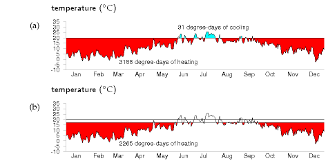
Figure E.4. The temperature demand in Cambridge, 2006, visualized as an area on a graph of daily average temperatures. (a) Thermostat set to 20 °C, including cooling in summer; (b) winter thermostat set to 17 °C.
The first factor is a property of the building measured in watts per °C. I’ll call this the leakiness of the building. (This leakiness is sometimes called the building’s heat-loss coefficient.) The second factor is a property of the weather; it’s often expressed as a number of “degree-days,” since temperature difference is measured in degrees, and days are a convenient unit for thinking about durations. For example, if your house interior is at 18 °C, and the outside temperature is 8 °C for a week, then we say that that week contributed 10 × 7 = 70 degree-days to the (ΔT ×duration) sum. I’ll call the sum of all the (ΔT × duration) factors the temperature demand of a period.
energy lost = leakiness × temperature demand.
We can reduce our energy loss by reducing the leakiness of the building, or by reducing our temperature demand, or both. The next two sections look more closely at these two factors, using a house in Cambridge as a case-study.
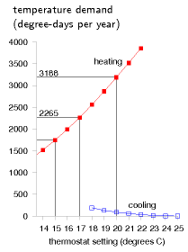
Figure E.5. Temperature demand in Cambridge, in degree-days per year, as a function of thermostat setting (°C). Reducing the winter thermostat from 20 °C to 17 °C reduces the temperature demand of heating by 30%, from 3188 to 2265 degree-days. Raising the summer thermostat from 20 °C to 23 °C reduces the temperature demand of cooling by 82%, from 91 to 16 degree-days.
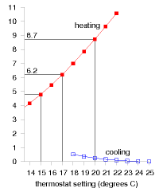
Figure E.6. The temperature demand in Cambridge, 2006, replotted in units of degree-days per day, also known as degrees. In these units, the temperature demand is just the average of the temperature difference between inside and outside.
There is a third factor we must also discuss. The lost energy is replenished by the building’s heating system, and by other sources of energy such as the occupants, their gadgets, their cookers, and the sun. Focussing on the heating system, the energy delivered by the heating is not the same as the energy consumed by the heating. They are related by the coefficient of performance of the heating system.
energy consumed = energy delivered/coefficient of performance.
For a condensing boiler burning natural gas, for example, the coefficient of performance is 90%, because 10% of the energy is lost up the chimney.
To summarise, we can reduce the energy consumption of a building in three ways:
- by reducing temperature demand;
- by reducing leakiness; or
- by increasing the coefficient of performance.
We now quantify the potential of these options. (A fourth option – increasing the building’s incidental heat gains, especially from the sun – may also be useful, but I won’t address it here.)
Temperature demand
We can visualize the temperature demand nicely on a graph of external temperature versus time (figure E.4). For a building held at a temperature of 20 °C, the total temperature demand is the area between the horizontal line at 20 °C and the external temperature. In figure E.4a, we see that, for one year in Cambridge, holding the temperature at 20 °C year-round had a temperature demand of 3188 degree-days of heating and 91 degree-days of cooling. These pictures allow us easily to assess the effect of turning down the thermostat and living without air-conditioning. Turning the winter thermostat down to 17 °C, the temperature demand for heating drops from 3188 degree-days to 2265 degree-days (figure E.4b), which corresponds to a 30% reduction in heating demand. Turning the thermostat down to 15 °C reduces the temperature demand from 3188 to 1748 degree days, a 45% reduction.
These calculations give us a ballpark indication of the benefit of turning down thermostats, but will give an exact prediction only if we take into account two details: first, buildings naturally absorb energy from the sun, boosting the inside above the outside temperature, even without any heating; and second, the occupants and their gadget companions emit heat, so further cutting down the artificial heating requirements. The temperature demand of a location, as conventionally expressed in degree-days, is a bit of an unwieldy thing. I find it hard to remember numbers like “3500 degree-days.” And academics may find the degree-day a distressing unit, since they already have another meaning for degree days (one involving dressing up in gowns and mortar boards). We can make this quantity more meaningful and perhaps easier to work with by dividing it by 365, the number of days in the year, obtaining the temperature demand in “degree-days per day,” or, if you prefer, in plain “degrees.” Figure E.6 shows this replotted temperature demand. Expressed this way, the temperature demand is simply the average temperature difference between inside and outside. The highlighted temperature demands are: 8.7 °C, for a thermostat setting of 20 °C; 6.2 °C, for a setting of 17 °C; and 4.8 °C, for a setting of 15 °C.

Figure E.7. My house.
Leakiness – example: my house
My house is a three-bedroom semi-detached house built about 1940 (figure E.7). By 2006, its kitchen had been slightly extended, and most of the windows were double-glazed. The front door and back door were both still single-glazed.
My estimate of the leakiness in 2006 is built up as shown in table E.8. The total leakiness of the house was 322 W/°C (or 7.7 kWh/d/.C), with conductive leakiness accounting for 72% and ventilation leakiness for 28% of the total. The conductive leakiness is roughly equally divided into three parts: windows; walls; and floor and ceiling.
| Conductive leakiness |
area (m2) |
U-value (W/m2/°C) |
leakiness (W/°C) |
|---|---|---|---|
| Horizontal surfaces | |||
| Pitched roof | 48 | 0.6 | 28.8 |
| Flat roof | 1.6 | 3 | 4.8 |
| Floor | 50 | 0.8 | 40 |
| Vertical surfaces | |||
| Extension walls | 24.1 | 0.6 | 14.5 |
| Main walls | 50 | 1 | 50 |
| Thin wall (5in) | 2 | 3 | 6 |
|
Single-glazed doors and windows |
7.35 | 5 | 36.7 |
| Double-glazed windows | 17.8 | 2.9 | 51.6 |
| Total conductive leakiness | 232.4 | ||
| Ventilation leakiness |
volume (m3) |
N (air-changes per hour) |
leakiness (W/°C) |
|---|---|---|---|
| Bedrooms | 80 | 0.5 | 13.3 |
| Kitchen | 36 | 2 | 24 |
| Hall | 27 | 3 | 27 |
| Other rooms | 77 | 1 | 25.7 |
| Total ventilation leakiness | 90 |
Table E.8. Breakdown of my house’s conductive leakiness, and its ventilation leakiness, pre-2006. I’ve treated the central wall of the semi-detached house as a perfect insulating wall, but this may be wrong if the gap between the adjacent houses is actually well-ventilated. I’ve highlighted the parameters that I altered after 2006, in modifications to be described shortly.
To compare the leakinesses of two buildings that have different floor areas, we can divide the leakiness by the floor area; this gives the heat-loss parameter of the building, which is measured in W/°C/m2. The heat-loss parameter of this house (total floor area 88 m2) is
3.7 W/°C/m2.
Let’s use these figures to estimate the house’s daily energy consumption on a cold winter’s day, and year-round.
On a cold day, assuming an external temperature of -1 °C and an internal temperature of 19 °C, the temperature difference is ΔT = 20 °C. If this difference is maintained for 6 hours per day then the energy lost per day is
322 W/°C × 120 degree-hours ≅ 39 kWh.
If the temperature is maintained at 19 °C for 24 hours per day, the energy lost per day is
155 kWh/d.
To get a year-round heat-loss figure, we can take the temperature demand of Cambridge from figure E.5. With the thermostat at 19 °C, the temperature demand in 2006 was 2866 degree-days. The average rate of heat loss, if the house is always held at 19 °C, is therefore:
7.7 kWh/d/°C × 2866 degree-days/y/(365 days/y) = 61 kWh/d.
Turning the thermostat down to 17 °C, the average rate of heat loss drops to 48 kWh/d. Turning it up to a tropical 21 °C, the average rate of heat loss is 75 kWh/d.
Effects of extra insulation
During 2007, I made the following modifications to the house:
- Added cavity-wall insulation (which was missing in the main walls of the house) – figure 21.5.
- Increased the insulation in the roof.
- Added a new front door outside the old – figure 21.6.
- Replaced the back door with a double-glazed one.
- Double-glazed the one window that was still single-glazed.
What’s the predicted change in heat loss?
The total leakiness before the changes was 322 W/°C.
Adding cavity-wall insulation (new U-value 0.6) to the main walls reduces the house’s leakiness by 20 W/°C. The improved loft insulation (new U-value 0.3) should reduce the leakiness by 14 W/°C. The glazing modifications (new U-value 1.6–1.8) should reduce the conductive leakiness by 23 W/°C, and the ventilation leakiness by something like 24 W/°C. That’s a total reduction in leakiness of 25%, from roughly 320 to 240 W/°C (7.7 to 6 kWh/d/°C). Table E.9 shows the predicted savings from each of the modifications.
The heat-loss parameter of this house (total floor area 88 m2) is thus hopefully reduced by about 25%, from 3.7 to 2.7 W/°C/m2. (This is a long way from the 1.1 W/°C/m2 required of a “sustainable” house in the new building codes.)
|
– Cavity-wall insulation (applicable to two-thirds of the wall area) |
4.8 kWh/d |
| – Improved roof insulation | 3.5 kWh/d |
|
– Reduction in conduction from double-glazing two doors and one window |
1.9 kWh/d |
|
– Ventilation reductions in hall and kitchen from improvements to doors and windows |
2.9 kWh/d |
Table E.9. Break-down of the predicted reductions in heat loss from my house, on a cold winter day.
It’s frustratingly hard to make a really big dent in the leakiness of an already-built house! As we saw a moment ago, a much easier way of achieving a big dent in heat loss is to turn the thermostat down. Turning down from 20 to 17 °C gave a reduction in heat loss of 30%.
Combining these two actions – the physical modifications and the turning-down of the thermostat – this model predicts that heat loss should be reduced by nearly 50%. Since some heat is generated in a house by sunshine, gadgets, and humans, the reduction in gas consumption should be more than 50%.
I made all these changes to my house and monitored my meters every week. I can confirm that my heating bill indeed went down by more than 50%. As figure 21.4 showed, my gas consumption has gone down from 40 kWh/d to 13 kWh/d – a reduction of 67%.
Leakiness reduction by internal wall-coverings
Can you reduce your walls’ leakiness by covering the inside of the wall with insulation? The answer is yes, but there may be two complications. First, the thickness of internal covering is bigger than you might expect. To transform an existing nine-inch solid brick wall (U-value 2.2 W/m2/K) into a decent 0.30 W/m2/K wall, roughly 6 cm of insulated lining board is required. [65h3cb] Second, condensation may form on the hidden surface of such internal insulation layers, leading to damp problems.
If you’re not looking for such a big reduction in wall leakiness, you can get by with a thinner internal covering. For example, you can buy 1.8-cmthick insulated wallboards with a U-value of 1.7 W/m2/K. With these over the existing wall, the U-value would be reduced from 2.2 W/m2/K to:
\[ \left. 1/{\left( {\frac{1}{2.2} + \frac{1}{1.7}} \right) \approx 1\text{~W/}\text{m}^{\text{2}}\text{/K.}} \right. \]
Definitely a worthwhile reduction.
Air-exchange
Once a building is really well insulated, the principal loss of heat will be through ventilation (air changes) rather than through conduction. The heat loss through ventilation can be reduced by transferring the heat from the outgoing air to the incoming air. Remarkably, a great deal of this heat can indeed be transferred without any additional energy being required. The trick is to use a nose, as discovered by natural selection. A nose warms incoming air by cooling down outgoing air. There’s a temperature gradient along the nose; the walls of a nose are coldest near the nostrils. The longer your nose, the better it works as a counter-current heat exchanger. In nature’s noses, the direction of the air-flow usually alternates. Another way to organize a nose is to have two air-passages, one for in-flow and one for out-flow, separate from the point of view of air, but tightly coupled with each other so that heat can easily flow between the two passages. This is how the noses work in buildings. It’s conventional to call these noses heat-exchangers.
An energy-efficient house
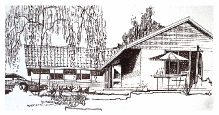
Figure E.10. The Heatkeeper Serrekunda.
In 1984, an energy consultant, Alan Foster, built an energy-efficient house near Cambridge; he kindly gave me his thorough measurements. The house is a timber-framed bungalow based on a Scandinavian “Heatkeeper Serrekunda” design (figure E.10), with a floor area of 140 m2, composed of three bedrooms, a study, two bathrooms, a living room, a kitchen, and a lobby. The wooden outside walls were supplied in kit form by a Scottish company, and the main parts of the house took only a few days to build.
The walls are 30 cm thick and have a U-value of 0.28 W/m2/°C. From the inside out, they consist of 13 mm of plasterboard, 27 mm airspace, a vapour barrier, 8 mm of plywood, 90 mm of rockwool, 12 mm of bitumen-impregnated fibreboard, 50 mm cavity, and 103 mm of brick. The ceiling construction is similar with 100–200 mm of rockwool insulation. The ceiling has a U-value of 0.27 W/m2/°C, and the floor, 0.22 W/m2/°C. The windows are double-glazed (U-value 2 W/m2/°C), with the inner panes’ outer surfaces specially coated to reduce radiation. The windows are arranged to give substantial solar gain, contributing about 30% of the house’s space-heating.
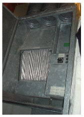
Figure E.11. The Heatkeeper’s heat-exchanger.
The house is well sealed, every door and window lined with neoprene gaskets. The house is heated by warm air pumped through floor grilles; in winter, pumps remove used air from several rooms, exhausting it to the outside, and they take in air from the loft space. The incoming air and outgoing air pass through a heat exchanger (figure E.11), which saves 60% of the heat in the extracted air. The heat exchanger is a passive device, using no energy: it’s like a big metal nose, warming the incoming air with the outgoing air. On a cold winter’s day, the outside air temperature was -8 °C, the temperature in the loft’s air intake was 0 °C, and the air coming out of the heat exchanger was at +8 °C.
For the first decade, the heat was supplied entirely by electric heaters, heating a 150-gallon heat store during the overnight economy period. More recently a gas supply was brought to the house, and the space heating is now obtained from a condensing boiler.
The heat loss through conduction and ventilation is 4.2 kWh/d/°C. The heat loss parameter (the leakiness per square metre of floor area) is 1.25 W/m2/°C (cf. my house’s 2.7 W/°C/m2).
With the house occupied by two people, the average space-heating consumption, with the thermostat set at 19 or 20 °C during the day, was 8100 kWh per year, or 22 kWh/d; the total energy consumption for all purposes was about 15 000 kWh per year, or 40 kWh/d. Expressed as an average power per unit area, that’s 6.6 W/m2.
Erratum: This is incorrect. 6.6 W/m2 is the heating power only. The total power per unit area is 12.2 W/m2. This error is repeated in figure E.12.
Figure E.12 compares the power consumption per unit area of this Heatkeeper house with my house (before and after my efficiency push) and with the European average. My house’s post-efficiency-push consumption is close to that of the Heatkeeper, thanks to the adoption of lower thermostat settings.
Benchmarks for houses and offices
The German Passivhaus standard aims for power consumption for heating and cooling of 15 kWh/m2/y, which is 1.7 W/m2; and total power consumption of 120 kWh/m2/y, which is 13.7 W/m2.
The average energy consumption of the UK service sector, per unit floor area, is 30 W/m2.
An energy-efficient office
The National Energy Foundation built themselves a low-cost low-energy building. It has solar panels for hot water, solar photovoltaic (PV) panels generating up to 6.5 kW of electricity, and is heated by a 14-kW groundsource heat pump and occasionally by a wood stove. The floor area is 400m2 and the number of occupants is about 30. It is a single-storey building. The walls contain 300mm of rockwool insulation. The heat pump’s coefficient of performance in winter was 2.5. The energy used is 65 kWh per year per square metre of floor area (7.4 W/m2). The PV system delivers almost 20% of this energy.
Contemporary offices
New office buildings are often hyped up as being amazingly environmentfriendly. Let’s look at some numbers.
The William Gates building at Cambridge University holds computer science researchers, administrators, and a small café. Its area is 11 110 m2, and its energy consumption is 2392 MWh/y. That’s a power per unit area of 215 kWh/m2/y, or 25 W/m2. This building won a RIBA award in 2001 for its predicted energy consumption. “The architects have incorporated many environmentally friendly features into the building.” [5dhups]
But are these buildings impressive? Next door, the Rutherford building, built in the 1970s without any fancy eco-claims – indeed without even double glazing – has a floor area of 4998 m2 and consumes 1557 MWh per year; that’s 0.85 kWh/d/m2, or 36 W/m2. So the award-winning building is just 30% better, in terms of power per unit area, than its simple 1970s cousin. Figure E.12 compares these buildings and another new building, the Law Faculty, with the Old Schools, which are ancient offices built pre-1890. For all the fanfare, the difference between the new and the old is really quite disappointing!
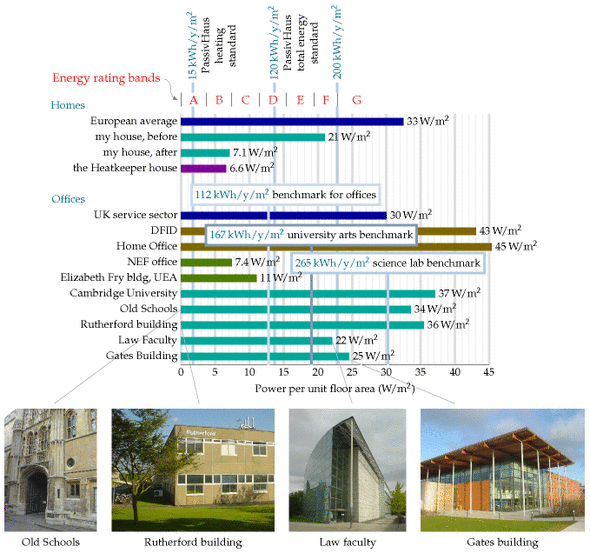
Figure E.12. Building benchmarks. Power used per unit area in various homes and offices. Erratum: Another problem with figure E.12 is that the PassivHaus standards use a different convention for defining power: power is measured in terms of “primary energy consumption”, which requires knowledge of the sources of electricity and fuel and of conversion efficiencies. This means that the PassivHaus standards are actually more stringent than the figure shows; though exactly how much more stringent depends on the fuel mix.
Notice that the building power consumptions, per unit floor area, are in just the same units (W/m2) as the renewable powers per unit area that we discussed in chapters 6 and 25. Comparing these consumption and production numbers helps us realize how difficult it is to power modern buildings entirely from on-site renewables. The power per unit area of biofuels (figure 6.11) is 0.5 W/m2; of wind farms, 2 W/m2; of solar photovoltaics, 20 W/m2 (figure 6.18); only solar hot-water panels come in at the right sort of power per unit area, 53 W/m2 (figure 6.3).
Improving the coefficient of performance
You might think that the coefficient of performance of a condensing boiler, 90%, sounds pretty hard to beat. But it can be significantly improved upon, by heat pumps. Whereas the condensing boiler takes chemical energy and turns 90% of it into useful heat, the heat pump takes some electrical energy and uses it to move heat from one place to another (for example, from outside a building to inside). Usually the amount of useful heat delivered is much bigger than the amount of electricity used. A coefficient of performance of 3 or 4 is normal.
Theory of heat pumps
Here are the formulae for the ideal efficiency of a heat pump, that is, the electrical energy required per unit of heat pumped. If we are pumping heat from an outside place at temperature T1 into a place at higher temperature T2, both temperatures being expressed relative to absolute zero (that is, T2, in kelvin, is given in terms of the Celsius temperature Tin, by 273.15 + Tin), the ideal efficiency is:
\[ \text{efficiency} = \frac{T_{2}}{T_{2} - T_{1}}\text{.} \]
If we are pumping heat out from a place at temperature T2 to a warmer exterior at temperature T1, the ideal efficiency is:
\[ \text{efficiency} = \frac{T_{2}}{T_{1} - T_{2}}\text{.} \]
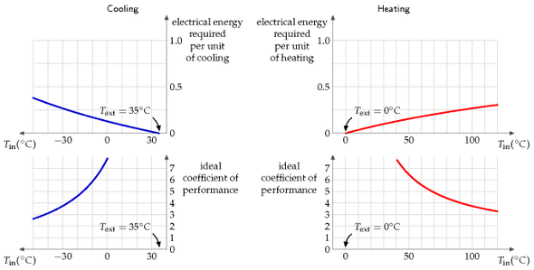
Figure E.13. Ideal heat pump efficiencies. Top left: ideal electrical energy required, according to the limits of thermodynamics, to pump heat out of a place at temperature Tin when the heat is being pumped to a place at temperature Tout = 35 °C. Right: ideal electrical energy required to pump heat into a place at temperature Tin when the heat is being pumped from a place at temperature Tout = 0 °C. Bottom row: the efficiency is conventionally expressed as a “coefficient of performance,” which is the heat pumped per unit electrical energy. In practice, I understand that well-installed ground-source heat pumps and the best air-source heat pumps usually have a coefficient of performance of 3 or 4; however, government regulations in Japan have driven the coefficient of performance as high as 6.6.
These theoretical limits could only be achieved by systems that pump heat infinitely slowly. Notice that the ideal efficiency is bigger, the closer the inside temperature T2 is to the outside temperature T1.
Figure E.13. Ideal heat pump efficiencies. Top left: ideal electrical energy required, according to the limits of thermodynamics, to pump heat out of a place at temperature Tin when the heat is being pumped to a place at temperature Tout = 35 °C. Right: ideal electrical energy required to pump heat into a place at temperature Tin when the heat is being pumped from a place at temperature Tout = 0 °C. Bottom row: the efficiency is conventionally expressed as a “coefficient of performance,” which is the heat pumped per unit electrical energy. In practice, I understand that well-installed ground-source heat pumps and the best air-source heat pumps usually have a coefficient of performance of 3 or 4; however, government regulations in Japan have driven the coefficient of performance as high as 6.6.
While in theory ground-source heat pumps might have better performance than air-source, because the ground temperature is usually closer than the air temperature to the indoor temperature, in practice an air-source heat pump might be the best and simplest choice. In cities, there may be uncertainty about the future effectiveness of ground-source heat pumps, because the more people use them in winter, the colder the ground gets; this thermal fly-tipping problem may also show up in the summer in cities where too many buildings use ground-source (or should I say “ground-sink”?) heat pumps for air-conditioning.
Heat capacity:
C = 820 J/kg/K
Conductivity:
κ = 2.1 W/m/K
Density:
ρ = 2750 kg/m3
Heat capacity per unit volume:
CV = 2.3 MJ/m3/K
Table E.14. Vital statistics for granite. (I use granite as an example of a typical rock.)
Heating and the ground
Here’s an interesting calculation to do. Imagine having solar heating panels on your roof, and, whenever the water in the panels gets above 50 °C, pumping the water through a large rock under your house. When a dreary grey cold month comes along, you could then use the heat in the rock to warm your house. Roughly how big a 50 °C rock would you need to hold enough energy to heat a house for a whole month? Let’s assume we’re after 24 kWh per day for 30 days and that the house is at 16 °C. The heat capacity of granite is 0.195 × 4200 J/kg/K = 820 J/kg/K. The mass of granite required is:
\[ \begin{matrix} {= \frac{\text{energy}}{\text{heat\ capacity} \times \text{temperature\ difference}}} \\ {= \frac{24 \times 30 \times 3.6\text{~MJ}}{\left( {820\text{~J/kg/°C}} \right)\left( {50\ {^\circ}\text{C} - 16\ {^\circ}\text{C}} \right)}} \\ {= 100\ 000\text{~kg.}} \\ \end{matrix} \]
100 tonnes, which corresponds to a cuboid of rock of size 6 m × 6 m × 1 m.
Ground storage without walls
| (W/m/K) | |
|---|---|
| water | 0.6 |
| quartz | 8 |
| granite | 2.1 |
| earth’s crust | 1.7 |
| dry soil | 0.14 |
Table E.15. Thermal conductivities. For more data see table E.18.
OK, we’ve established the size of a useful ground store. But is it difficult to keep the heat in? Would you need to surround your rock cuboid with lots of insulation? It turns out that the ground itself is a pretty good insulator. A spike of heat put down a hole in the ground will spread as
\[ \frac{1}{\sqrt{4\pi\kappa t}}\text{exp}\left( {- \frac{x^{2}}{4\left( {\kappa/\left( {C\rho} \right)} \right)t}} \right) \]
where κ is the conductivity of the ground, C is its heat capacity, and ρ is its density. This describes a bell-shaped curve with width
\[ \sqrt{2\frac{\kappa}{C\rho}t}\text{~;} \]
for example, after six months (t = 1.6 × 107 s), using the figures for granite (C = 0.82 kJ/kg/K, ρ = 2500 kg/m3, κ = 2.1 W/m/K), the width is 6 m.
Using the figures for water (C = 4.2 kJ/kg/K, ρ = 1000 kg/m3, κ = 0.6 W/m/K), the width is 2 m.
So if the storage region is bigger than 20 m × 20 m × 20 m then most of the heat stored will still be there in six months time (because 20 m is significantly bigger than 6 m and 2 m).
Limits of ground-source heat pumps
The low thermal conductivity of the ground is a double-edged sword. Thanks to low conductivity, the ground holds heat well for a long time. But on the other hand, low conductivity means that it’s not easy to shove heat in and out of the ground rapidly. We now explore how the conductivity of the ground limits the use of ground-source heat pumps.
Consider a neighbourhood with quite a high population density. Can everyone use ground-source heat pumps, without using active summer replenishment (as discussed in chapter 21)? The concern is that if we all sucked heat from the ground at the same time, we might freeze the ground solid. I’m going to address this question by two calculations. First, I’ll work out the natural flux of energy in and out of the ground in summer and winter. If the flux we want to suck out of the ground in winter is much bigger than these natural fluxes then we know that our sucking is going to significantly alter ground temperatures, and may thus not be feasible. For this calculation, I’ll assume the ground just below the surface is held, by the combined influence of sun, air, cloud, and night sky, at a temperature that varies slowly up and down during the year (figure E.16).
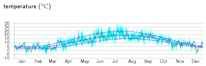
Figure E.16. The temperature in Cambridge, 2006, and a cartoon, which says the temperature is the sum of an annual sinusoidal variation between 3 °C and 20 °C, and a daily sinusoidal variation with range up to 10.3 °C. The average temperature is 11.5 °C.
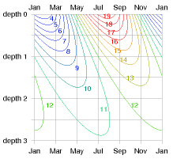
Figure E.17. Temperature (in °C) versus depth and time. The depths are given in units of the characteristic depth z0, which for granite and annual variations is 3 m. At “depth 2” (6 m), the temperature is always about 11 or 12 °C. At “depth 1” (3 m), it wobbles between 8 and 15 °C.
Response to external temperature variations
Working out how the temperature inside the ground responds, and what the flux in or out is, requires some advanced mathematics, which I’ve cordoned off in box E.19.
The payoff from this calculation is a rather beautiful diagram (figure E.17) that shows how the temperature varies in time at each depth. This diagram shows the answer for any material in terms of the characteristic length-scale z0 (equation (E.7)), which depends on the conductivity κ and heat capacity CV of the material, and on the frequency ω of the external temperature variations. (We can choose to look at either daily and yearly variations using the same theory.) At a depth of 2z0, the variations in temperature are one seventh of those at the surface, and lag them by about one third of a cycle (figure E.17). At a depth of 3z0, the variations in temperature are one twentieth of those at the surface, and lag them by half a cycle.
For the case of daily variations and solid granite, the characteristic length-scale is z0 = 0.16 m. (So 32 cm of rock is the thickness you need to ride out external daily temperature oscillations.) For yearly variations and solid granite, the characteristic length-scale is z0 = 3 m.
Let’s focus on annual variations and discuss a few other materials. Characteristic length-scales for various materials are in the third column of table E.18. For damp sandy soils or concrete, the characteristic length-scale z0 is similar to that of granite – about 2.6 m. In dry or peaty soils, the length-scale z0 is shorter – about 1.3 m. That’s perhaps good news because it means you don’t have to dig so deep to find ground with a stable temperature. But it’s also coupled with some bad news: the natural fluxes are smaller in dry soils.
The natural flux varies during the year and has a peak value (equation (E.9)) that is smaller, the smaller the conductivity.
For the case of solid granite, the peak flux is 8 W/m2. For dry soils, the peak flux ranges from 0.7 W/m2 to 2.3 W/m2. For damp soils, the peak flux ranges from 3 W/m2 to 8 W/m2.
What does this mean? I suggest we take a flux in the middle of these numbers, 5 W/m2, as a useful benchmark, giving guidance about what sort of power we could expect to extract, per unit area, with a ground-source heat pump. If we suck a flux significantly smaller than 5 W/m2, the perturbation we introduce to the natural flows will be small. If on the other hand we try to suck a flux bigger than 5 W/m2, we should expect that we’ll be shifting the temperature of the ground significantly away from its natural value, and such fluxes may be impossible to demand.
The population density of a typical English suburb corresponds to 160 m2 per person (rows of semi-detached houses with about 400 m2 per house, including pavements and streets). At this density of residential area, we can deduce that a ballpark limit for heat pump power delivery is
5 W/m2 × 160 m2 = 800 W = 19 kWh/d per person.
This is uncomfortably close to the sort of power we would like to deliver in winter-time: it’s plausible that our peak winter-time demand for hot air and hot water, in an old house like mine, might be 40 kWh/d per person.
This calculation suggests that in a typical suburban area, not everyone can use ground-source heat pumps, unless they are careful to actively dump heat back into the ground during the summer.
thermal conductivity
heat capacity
length-scale
flux
κ (W/m/K)
CV (MJ/m3/K)
z0 (m)
A√(CVκω) (W/m2)
Air
0.02
0.0012
Water
0.57
4.18
1.2
5.7
Solid granite
2.1
2.3
3.0
8.1
Concrete
1.28
1.94
2.6
5.8
Sandy soil
dry
0.30
1.28
1.5
2.3
50% saturated
1.80
2.12
2.9
7.2
100% saturated
2.20
2.96
2.7
9.5
Clay soil
dry
0.25
1.42
1.3
2.2
50% saturated
1.18
2.25
2.3
6.0
100% saturated
1.58
3.10
2.3
8.2
Peat soil
| Material | κ | CV | z0 (m) | peak flux |
|---|---|---|---|---|
| dry | 0.06 | 0.58 | 1.0 | 0.7 |
| 50% saturated | 0.29 | 2.31 | 1.1 | 3.0 |
| 100% saturated | 0.50 | 4.02 | 1.1 | 5.3 |
Table E.18. Thermal conductivity and heat capacity of various materials and soil types, and the deduced length-scale z0 = √(2κ/(CVω)) and peak flux A√(CVκω) associated with annual temperature variations with amplitude A = 8.3 °C. The sandy and clay soils have porosity 0.4; the peat soil has porosity 0.8. 1
Let’s do a second calculation, working out how much power we could steadily suck from a ground loop at a depth of h = 2 m. Let’s assume that we’ll allow ourselves to suck the temperature at the ground loop down to ΔT = 5 °C below the average ground temperature at the surface, and let’s assume that the surface temperature is constant. We can then deduce the heat flux from the surface. Assuming a conductivity of 1.2 W/m/K (typical of damp clay soil),
\[ \text{Flux} = \kappa \times \frac{\Delta T}{h} = 3\text{~W/}\text{m}^{2}\text{.} \]
If, as above, we assume a population density corresponding to 160 m2 per person, then the maximum power per person deliverable by ground-source heat pumps, if everyone in a neighbourhood has them, is 480 W, which is 12 kWh/d per person.
So again we come to the conclusion that in a typical suburban area composed of poorly insulated houses like mine, not everyone can use groundsource heat pumps, unless they are careful to actively dump heat back into the ground during the summer. And in cities with higher population density, ground-source heat pumps are unlikely to be viable.
I therefore suggest air-source heat pumps are the best heating choice for most people.
Thermal mass
Does increasing the thermal mass of a building help reduce its heating and cooling bills? It depends. The outdoor temperature can vary during the day by about 10 °C. A building with large thermal mass – thick stone walls, for example – will naturally ride out those variations in temperature, and, without heating or cooling, will have a temperature close to the average outdoor temperature. Such buildings, in the UK, need neither heating nor cooling for many months of the year. In contrast, a poorly-insulated building with low thermal mass might be judged too hot during the day and too cool at night, leading to greater expenditure on cooling and heating.
However, large thermal mass is not always a boon. If a room is occupied in winter for just a couple of hours a day (think of a lecture room for example), the energy cost of warming the room up to a comfortable temperature will be greater, the greater the room’s thermal mass. This extra invested heat will linger for longer in a thermally massive room, but if nobody is there to enjoy it, it’s wasted heat. So in the case of infrequently-used rooms it makes sense to aim for a structure with low thermal mass, and to warm that small mass rapidly when required.
What the theory says about British radiators
A section added in the 2026 revision. This chapter derives the ideal coefficient of performance of a heat pump — the temperature it pumps to, divided by the difference between that and the temperature it pumps from, both in kelvin. It is one of the more useful formulae in the book, and it answers a question the policy debate has been having without it.
Real machines reach roughly 40 to 50% of the ideal. Britain’s Electrification of Heat trial measured a seasonal performance factor of 2.81 across 428 installed heat pumps — the only large field measurement of its kind. Put that beside what this chapter’s formula gives, and the gap is informative rather than embarrassing:
| Flow temperature | Ideal COP from 0 °C | At 40% of ideal |
|---|---|---|
| 35 °C — underfloor, or oversized radiators | 8.8 | 3.5 |
| 45 °C | 7.1 | 2.8 |
| 55 °C — typical existing radiators | 6.0 | 2.4 |
| 65 °C — radiators sized for a boiler | 5.2 | 2.1 |
The measured 2.81 sits a little above the 55 °C row — about 47% of ideal at that flow temperature — which is where a British house with unmodified radiators and a competently installed machine should sit. The machines are not underperforming. They are being asked to deliver 55 °C water into a house that needs it.
Which settles, from the theory, an argument chapter 7 has to make from survey data. Chapter 7 records that a heat pump wants roughly EPC band C to reach a seasonal performance factor of 3.0, and that about two English homes in five fall below it. This chapter says why: a colder house needs hotter water to heat it, hotter water lowers the coefficient of performance, and the relationship is in the denominator, so it bites hard. Dropping the flow temperature from 55 °C to 35 °C raises the ideal from 6.0 to 8.8 — a 45% improvement in efficiency bought entirely by insulation and bigger radiators, with no change to the machine at all.
That is the quantitative form of the advice everybody gives and few justify. Insulate first is not a preference or a sequencing convention. It is this formula. The fabric determines the flow temperature, the flow temperature determines the coefficient of performance, and the coefficient of performance determines whether the electricity bill is smaller than the gas bill was.
One thing the formula does not capture, and chapter 7 records it: a hybrid system lets the boiler take the coldest days, so the heat pump never has to run at the flow temperature where its performance collapses. The formula explains why that works. It does not tell you whether keeping a gas connection for ever is a good idea.
Notes and further reading
If we assume the ground is made of solid homogenous material with conductivity κ and heat capacity CV, then the temperature at depth z below the ground and time t responds to the imposed temperature at the surface in accordance with the diffusion equation
\[ \begin{matrix} {\frac{\partial T\left( z,t \right)}{\partial t} = \frac{\kappa}{C_{\text{V}}}\frac{\partial^{2}T\left( z,t \right)}{\partial z^{2}}\text{.}} \\ \end{matrix} \]
For a sinusoidal imposed temperature with frequency ω and amplitude A at depth z = 0,
\[ \begin{matrix} {T\left( 0,t \right) = T_{\text{surface}}\left( t \right) = T_{\text{average}} + A\text{cos}\left( \omega t \right)\text{,}} \\ \end{matrix} \]
the resulting temperature at depth z and time t is a decaying and oscillating function
\[ \begin{matrix} {T\left( z,t \right) = T_{\text{average}}\left( t \right) + A\text{e}^{- {z/z_{0}}}\text{cos}\left( {\omega t - {z/z_{0}}} \right)\text{,}} \\ \end{matrix} \]
where z0 is the characteristic length-scale of both the decay and the oscillation,
\[ \begin{matrix} \text{(E.7)\quad} & {z_{0} = \sqrt{\frac{2\kappa}{C_{\text{V}}\omega}\text{,}}} \\ \end{matrix} \]
The flux of heat (the power per unit area) at depth z is
\[ \begin{matrix} {\kappa\frac{\partial T}{\partial z} = \kappa\frac{A}{z_{0}}\sqrt{2}\text{e}^{- {z/z_{0}}}\text{sin}\left( {\omega t - z/z_{0} - \pi/4} \right)} \\ \end{matrix}\text{.} \]
For example, at the surface, the peak flux is
\[ \begin{matrix} {\kappa\frac{A}{z_{0}}\sqrt{2} = A\sqrt{C_{\text{V}}\kappa\omega}} \\ \end{matrix}\text{.} \]
Box E.19. Working out the natural flux caused by sinusoidal temperature variations.
Table E.18. Sources: Bonan (2002), www.hukseflux.com/thermalScience/thermalConductivity.html↩︎